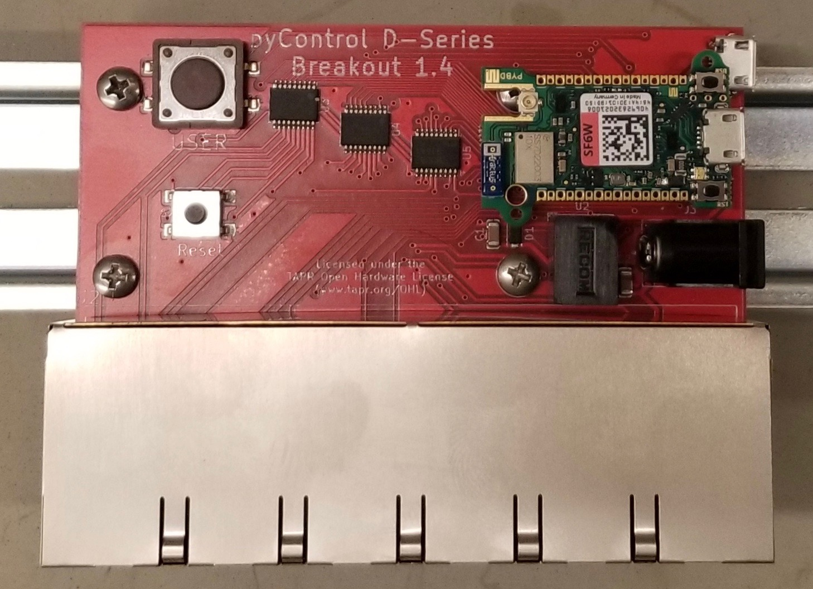
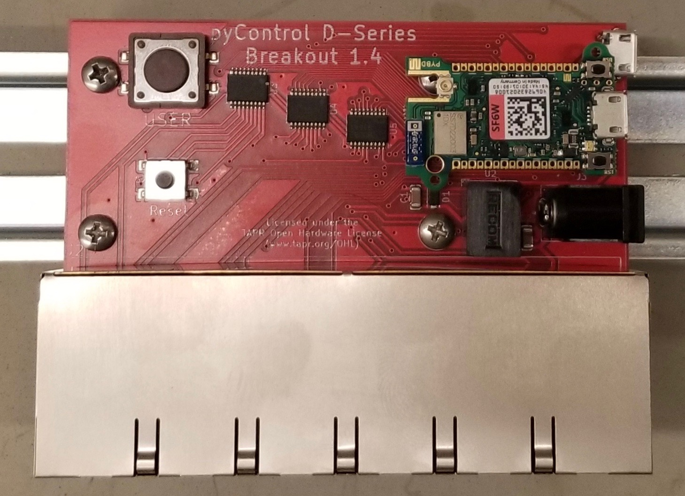

D-series Breakout for pyControl¶
 

{kind=link}
What is this?¶
pyControl D-series breakout is a device that connects a pyboard D-series microcontroller with twelve RJ45 ports. It is intended for use with the pyControl behavioral experiment control framework.
How is it different?¶

pyControl Breakout Board 1.2 (left) and D-series Breakout (right)¶
The core distinction between this breakout board and the official pyControl breakout board 1.2 is the upgrade to a newer generation pyboard. Some benefits of the newer pyboard include being smaller, faster, having more memory, and having more input/output pins. Having more available pins is particularly useful, as it enables the breakout board to provide more behavior ports without requiring a port expander. Below is a comparison of the two breakout boards.
Breakout Board 1.2 |
D-Series Breakout Board 1.6 |
|
|---|---|---|
Microcontroller |
||
Board |
||
CPU |
168 MHz Cortex-M4F |
216 MHz Cortex-M7F |
RAM |
192 KB |
512 KB |
ROM |
512 KB |
4,048 KB |
Connectors |
||
RJ45 |
6 |
12 |
BNC |
4 |
0 |
USB |
Full Speed (12 Mbit/s) |
High Speed (480 Mbit/s) |
Behavior Ports |
||
Power Driver Pins |
14 |
24 |
Digital I/O Pins |
14 |
30 |
ADC Pins |
12 |
15 |
DAC Pins |
2 |
2 |
UART Buses |
3 |
4 |
I2C Buses |
2 |
2 |
Dimensions |
||
PCB |
1.8 in x 7.6 in |
2.7 in x 3.6 in |
Performance |
||
Latency - No load |
561 ± 16 µs (100% < 1 ms) |
307 ± 9 µs (100% < 1 ms) |
Latency - High load |
842 ± 293 µs (84.8% < 1 ms) |
372 ± 95 µs (100% < 1 ms) |
Accuracy - No load |
-210 ± 281 µs (100% < 1 ms) |
-342 ± 285 µs (100% < 1 ms) |
Accuracy - High load |
-27 ± 351 µs (99.2% < 1 ms) |
-361 ± 280 µs (100% < 1 ms) |

More information on performance comparison here.